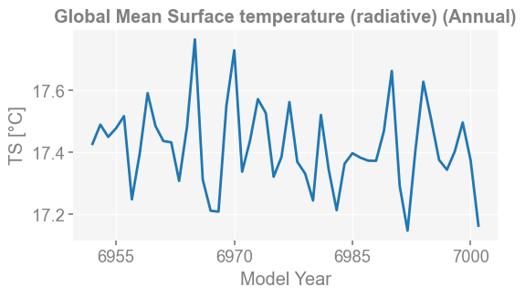

A “spell” system#
[1]:
%load_ext autoreload
%autoreload 2
import os
os.chdir('/glade/u/home/fengzhu/Github/x4c/docsrc/notebooks')
import x4c
print(x4c.__version__)
2024.5.2.17
[2]:
dirpath = '/glade/campaign/univ/ubrn0018/fengzhu/CESM_output/timeseries/b.e13.B1850C5.ne16_g16.icesm131_d18O_fixer.Miocene.3xCO2.005'
case = x4c.Timeseries(dirpath)
>>> case.root_dir: /glade/campaign/univ/ubrn0018/fengzhu/CESM_output/timeseries/b.e13.B1850C5.ne16_g16.icesm131_d18O_fixer.Miocene.3xCO2.005
>>> case.path_pattern: comp/proc/tseries/month_1/casename.mdl.h_str.vn.timespan.nc
>>> case.grid_dict: {'atm': 'ne16', 'lnd': 'ne16', 'rof': 'ne16', 'ocn': 'g16', 'ice': 'g16'}
>>> case.vars_info created
A 1st order variable that exists under the CESM Postprocessing Timeseries directory#
[3]:
spell = 'TS'
case.calc(spell)
case.diags[spell]
>>> case.ds["TS"] created
>>> case.diags["TS"] created
[3]:
<xarray.DataArray 'TS' (time: 600, ncol: 13826)> Size: 33MB
array([[30.115295, 29.491943, 28.593048, ..., 20.259125, 17.343262,
18.36267 ],
[31.816986, 31.327759, 30.49112 , ..., 19.40506 , 17.631165,
18.420319],
[30.922668, 30.435669, 29.57724 , ..., 19.17099 , 17.414886,
18.323761],
...,
[24.949066, 23.907959, 22.722198, ..., 29.804321, 27.803436,
28.56009 ],
[26.115387, 25.092682, 23.751007, ..., 25.909088, 23.512573,
24.234802],
[28.901093, 28.040283, 26.766968, ..., 22.911407, 20.540161,
21.184845]], dtype=float32)
Coordinates:
* time (time) object 5kB 6951-01-31 00:00:00 ... 7000-12-31 00:00:00
Dimensions without coordinates: ncol
Attributes:
units: °C
long_name: Surface temperature (radiative)
cell_methods: time: mean
path: /glade/campaign/univ/ubrn0018/fengzhu/CESM_output/timeseri...
gw: <xarray.DataArray 'gw' (ncol: 13826)> Size: 111kB\n[13826 ...
lat: <xarray.DataArray 'lat' (ncol: 13826)> Size: 111kB\n[13826...
lon: <xarray.DataArray 'lon' (ncol: 13826)> Size: 111kB\n[13826...
comp: atm
grid: ne16A deduced variable based on 1st order variables#
[4]:
spell = 'SST'
case.calc(spell)
case.diags[spell]
>>> case.ds["TEMP"] created
>>> case.diags["SST"] created
[4]:
<xarray.DataArray 'SST' (time: 600, nlat: 384, nlon: 320)> Size: 295MB
[73728000 values with dtype=float32]
Coordinates:
z_t float32 4B 500.0
ULONG (nlat, nlon) float64 983kB ...
ULAT (nlat, nlon) float64 983kB ...
TLONG (nlat, nlon) float64 983kB ...
TLAT (nlat, nlon) float64 983kB ...
* time (time) object 5kB 6951-01-31 00:00:00 ... 7000-12-31 00:00:00
Dimensions without coordinates: nlat, nlon
Attributes:
long_name: Sea Surface Temperature
units: °C
grid_loc: 3111
cell_methods: time: mean
path: /glade/campaign/univ/ubrn0018/fengzhu/CESM_output/timeseri...
gw: <xarray.DataArray 'gw' (nlat: 384, nlon: 320)> Size: 983kB...
lat: <xarray.DataArray 'lat' (nlat: 384, nlon: 320)> Size: 983k...
lon: <xarray.DataArray 'lon' (nlat: 384, nlon: 320)> Size: 983k...
comp: ocn
grid: g16[5]:
spell = 'd18Op'
case.calc(spell)
case.diags[spell]
>>> case.ds["PRECRC_H216Or"] created
>>> case.ds["PRECSC_H216Os"] created
>>> case.ds["PRECRL_H216OR"] created
>>> case.ds["PRECSL_H216OS"] created
>>> case.ds["PRECRC_H218Or"] created
>>> case.ds["PRECSC_H218Os"] created
>>> case.ds["PRECRL_H218OR"] created
>>> case.ds["PRECSL_H218OS"] created
>>> case.diags["d18Op"] created
[5]:
<xarray.DataArray 'd18Op' (time: 600, ncol: 13826)> Size: 33MB
array([[-1.7427206, -1.7643571, -2.1771193, ..., -8.510709 , -7.7379346,
-7.486999 ],
[-2.3528934, -2.1284223, -1.8881559, ..., -7.032275 , -6.7304373,
-6.397307 ],
[-2.2357106, -2.3323298, -2.5407076, ..., -7.622123 , -6.967664 ,
-6.7536235],
...,
[-2.425313 , -3.3228397, -4.793942 , ..., -3.848195 , -4.269719 ,
-3.5235286],
[-1.9090176, -2.6127696, -3.4157038, ..., -6.644845 , -6.4725876,
-6.0330033],
[-1.0784268, -1.4600754, -6.1579943, ..., -6.125927 , -4.7311783,
-4.798174 ]], dtype=float32)
Coordinates:
* time (time) object 5kB 6951-01-31 00:00:00 ... 7000-12-31 00:00:00
Dimensions without coordinates: ncol
Attributes:
units: m/s
long_name: Convective rain rate for H218Or
cell_methods: time: mean
path: /glade/campaign/univ/ubrn0018/fengzhu/CESM_output/timeseri...
gw: <xarray.DataArray 'gw' (ncol: 13826)> Size: 111kB\n[13826 ...
lat: <xarray.DataArray 'lat' (ncol: 13826)> Size: 111kB\n[13826...
lon: <xarray.DataArray 'lon' (ncol: 13826)> Size: 111kB\n[13826...
comp: atm
grid: ne16A horizontal 2D map#
[43]:
spell = 'TS:ann'
case.calc(spell)
case.diags[spell]
>>> case.ds["TS"] created
>>> case.diags["TS:ann"] created
[43]:
<xarray.DataArray 'TS' (time: 50, ncol: 13826)> Size: 3MB
array([[27.255615, 26.59375 , 25.732697, ..., 24.627686, 23.223907,
24.14569 ],
[27.369781, 26.764069, 25.98816 , ..., 24.485626, 23.12378 ,
24.04718 ],
[27.426819, 26.78302 , 25.943298, ..., 24.74707 , 23.381744,
24.290405],
...,
[27.305878, 26.622803, 25.72229 , ..., 25.120941, 23.717438,
24.671234],
[27.353516, 26.718628, 25.887177, ..., 25.187317, 23.84436 ,
24.80011 ],
[27.750732, 27.057007, 26.139557, ..., 25.670074, 24.444519,
25.14618 ]], dtype=float32)
Coordinates:
* time (time) object 400B 6951-12-31 00:00:00 ... 7000-12-31 00:00:00
Dimensions without coordinates: ncol
Attributes:
units: °C
long_name: Surface temperature (radiative) (Annual)
cell_methods: time: mean
path: /glade/campaign/univ/ubrn0018/fengzhu/CESM_output/timeseri...
gw: <xarray.DataArray 'gw' (ncol: 13826)> Size: 111kB\n[13826 ...
lat: <xarray.DataArray 'lat' (ncol: 13826)> Size: 111kB\n[13826...
lon: <xarray.DataArray 'lon' (ncol: 13826)> Size: 111kB\n[13826...
comp: atm
grid: ne16[47]:
x4c.set_style('journal_spines', font_scale=1.2)
fig, ax = case.plot(spell)
Regridding from [1, 13826] to [180, 360]
>>> case.ds["SSH"] created
[51]:
spell = 'SST:-12,1,2'
case.calc(spell)
case.diags[spell]
>>> case.ds["TEMP"] created
>>> case.diags["SST:-12,1,2"] created
[51]:
<xarray.DataArray 'SST' (time: 51, nlat: 384, nlon: 320)> Size: 25MB
array([[[nan, nan, nan, ..., nan, nan, nan],
[nan, nan, nan, ..., nan, nan, nan],
[nan, nan, nan, ..., nan, nan, nan],
...,
[nan, nan, nan, ..., nan, nan, nan],
[nan, nan, nan, ..., nan, nan, nan],
[nan, nan, nan, ..., nan, nan, nan]],
[[nan, nan, nan, ..., nan, nan, nan],
[nan, nan, nan, ..., nan, nan, nan],
[nan, nan, nan, ..., nan, nan, nan],
...,
[nan, nan, nan, ..., nan, nan, nan],
[nan, nan, nan, ..., nan, nan, nan],
[nan, nan, nan, ..., nan, nan, nan]],
[[nan, nan, nan, ..., nan, nan, nan],
[nan, nan, nan, ..., nan, nan, nan],
[nan, nan, nan, ..., nan, nan, nan],
...,
...
...,
[nan, nan, nan, ..., nan, nan, nan],
[nan, nan, nan, ..., nan, nan, nan],
[nan, nan, nan, ..., nan, nan, nan]],
[[nan, nan, nan, ..., nan, nan, nan],
[nan, nan, nan, ..., nan, nan, nan],
[nan, nan, nan, ..., nan, nan, nan],
...,
[nan, nan, nan, ..., nan, nan, nan],
[nan, nan, nan, ..., nan, nan, nan],
[nan, nan, nan, ..., nan, nan, nan]],
[[nan, nan, nan, ..., nan, nan, nan],
[nan, nan, nan, ..., nan, nan, nan],
[nan, nan, nan, ..., nan, nan, nan],
...,
[nan, nan, nan, ..., nan, nan, nan],
[nan, nan, nan, ..., nan, nan, nan],
[nan, nan, nan, ..., nan, nan, nan]]], dtype=float32)
Coordinates:
z_t float32 4B 500.0
ULONG (nlat, nlon) float64 983kB ...
ULAT (nlat, nlon) float64 983kB ...
TLONG (nlat, nlon) float64 983kB ...
TLAT (nlat, nlon) float64 983kB ...
* time (time) object 408B 6951-02-28 00:00:00 ... 7001-02-28 00:00:00
Dimensions without coordinates: nlat, nlon
Attributes:
long_name: Sea Surface Temperature (DJF)
units: °C
grid_loc: 3111
cell_methods: time: mean
path: /glade/campaign/univ/ubrn0018/fengzhu/CESM_output/timeseri...
gw: <xarray.DataArray 'gw' (nlat: 384, nlon: 320)> Size: 983kB...
lat: <xarray.DataArray 'lat' (nlat: 384, nlon: 320)> Size: 983k...
lon: <xarray.DataArray 'lon' (nlat: 384, nlon: 320)> Size: 983k...
comp: ocn
grid: g16[54]:
fig, ax = case.plot(spell)
[65]:
case.calc('MLD:3')
case.calc('MLD:9')
mask = case.diags['MLD:3'].lat > 0
case.diags['MLD:mix'] = case.diags['MLD:3'].mean('time').where(mask, other=case.diags['MLD:9'].mean('time'))
>>> case.ds["XMXL"] created
>>> case.diags["MLD:3"] created
>>> case.ds["XMXL"] already loaded; to reload, run case.clear_ds("XMXL") before case.load("XMXL")
>>> case.diags["MLD:9"] created
[68]:
fig, ax = case.plot(
'MLD:mix',
figsize=(6, 6),
cbar_kwargs={'orientation': 'horizontal', 'aspect': 20, 'pad': 0.05},
)
ax.set_title('Mixed Layer Depth (NH: Mar; SH: Sept)', weight='bold')
x4c.showfig(fig)
x4c.savefig(fig, './figs/map_MLD_mix.pdf')

Figure saved at: "figs/map_MLD_mix.pdf"
[WARNING] yaksa: 10 leaked handle pool objects
A timeseries#
[33]:
spell = 'TS:ann:gm'
case.calc(spell)
case.diags[spell]
>>> case.ds["TS"] created
Regridding from [1, 13826] to [180, 360]
>>> case.diags["TS:ann:gm"] created
[33]:
<xarray.DataArray 'TS' (time: 50)> Size: 400B
array([17.42720653, 17.48905824, 17.44967605, 17.47774547, 17.51654981,
17.24848253, 17.39658188, 17.59053861, 17.48456964, 17.43645915,
17.4322128 , 17.3081354 , 17.48215638, 17.76362381, 17.3122794 ,
17.21187245, 17.20908332, 17.54942076, 17.72846092, 17.33755901,
17.43767921, 17.57137876, 17.52678597, 17.32145085, 17.38547791,
17.56191536, 17.36943034, 17.33152329, 17.24494713, 17.52045722,
17.34284225, 17.21382635, 17.36316737, 17.39722006, 17.38297636,
17.3732631 , 17.3726002 , 17.46888324, 17.66213172, 17.29246269,
17.14775584, 17.40703955, 17.62723439, 17.50499981, 17.37590867,
17.34382487, 17.40328731, 17.49603029, 17.37513375, 17.16387423])
Coordinates:
* time (time) object 400B 6951-12-31 00:00:00 ... 7000-12-31 00:00:00
Attributes:
units: °C
long_name: Global Mean Surface temperature (radiative) (Annual)
cell_methods: time: mean
path: /glade/campaign/univ/ubrn0018/fengzhu/CESM_output/timeseri...
gw: <xarray.DataArray 'gw' (lat: 180, lon: 360)> Size: 518kB\n...
lat: <xarray.DataArray 'lat' (lat: 180)> Size: 1kB\narray([-89....
lon: <xarray.DataArray 'lon' (lon: 360)> Size: 3kB\narray([ 0....
comp: atm
grid: ne16[34]:
x4c.set_style('web', font_scale=1.2)
fig, ax = case.plot(spell)

A zonal mean plot#
[28]:
spell = 'LST:ann:zm'
case.calc(spell)
case.diags[spell]
>>> case.ds["TS"] created
>>> case.ds["LANDFRAC"] created
Regridding from [1, 13826] to [180, 360]
>>> case.diags["LST:ann:zm"] created
[28]:
<xarray.DataArray 'LST' (time: 50, lat: 180)> Size: 36kB
array([[-17.61438 , -18.295929, -18.382156, ..., nan, nan,
nan],
[-17.989594, -18.596909, -18.620834, ..., nan, nan,
nan],
[-17.135468, -18.006424, -18.126862, ..., nan, nan,
nan],
...,
[-17.056915, -17.642578, -17.642654, ..., nan, nan,
nan],
[-17.3172 , -17.903625, -17.959457, ..., nan, nan,
nan],
[-17.90384 , -18.5457 , -18.590149, ..., nan, nan,
nan]], dtype=float32)
Coordinates:
* lat (lat) float64 1kB -89.5 -88.5 -87.5 -86.5 ... 86.5 87.5 88.5 89.5
* time (time) object 400B 6951-12-31 00:00:00 ... 7000-12-31 00:00:00
Attributes:
units: °C
long_name: Zonal Mean Land Surface Temperature (Annual)
cell_methods: time: mean
path: /glade/campaign/univ/ubrn0018/fengzhu/CESM_output/timeseri...
gw: <xarray.DataArray 'gw' (lat: 180, lon: 360)> Size: 518kB\n...
lat: <xarray.DataArray 'lat' (lat: 180)> Size: 1kB\narray([-89....
lon: <xarray.DataArray 'lon' (lon: 360)> Size: 3kB\narray([ 0....
comp: atm
grid: ne16[31]:
fig, ax = case.plot(spell)

A vertical 2D plot#
[35]:
spell = 'MOC:ann:yz'
case.calc(spell)
case.diags[spell]
>>> case.ds["MOC"] created
>>> case.diags["MOC:ann:yz"] created
[35]:
<xarray.DataArray 'MOC' (time: 50, moc_z: 61, lat_aux_grid: 91)> Size: 1MB
array([[[ 0.00000000e+00, 0.00000000e+00, 0.00000000e+00, ...,
2.36021541e-03, 8.10216938e-04, 3.16757913e-04],
[ 0.00000000e+00, 0.00000000e+00, 0.00000000e+00, ...,
8.38778690e-02, 7.99491182e-02, 7.37172067e-02],
[ 0.00000000e+00, 0.00000000e+00, 0.00000000e+00, ...,
1.06880188e-01, 9.84256342e-02, 8.74157026e-02],
...,
[ 0.00000000e+00, 0.00000000e+00, 0.00000000e+00, ...,
2.72689181e-06, 2.72689181e-06, 2.72689181e-06],
[ 0.00000000e+00, 0.00000000e+00, 0.00000000e+00, ...,
7.71718305e-07, 7.71718305e-07, 7.71718305e-07],
[ 0.00000000e+00, 0.00000000e+00, 0.00000000e+00, ...,
0.00000000e+00, 0.00000000e+00, 0.00000000e+00]],
[[ 0.00000000e+00, 0.00000000e+00, 0.00000000e+00, ...,
-7.30628439e-04, -8.62350353e-05, 1.25391569e-04],
[ 0.00000000e+00, 0.00000000e+00, 0.00000000e+00, ...,
7.74025843e-02, 6.72006086e-02, 6.18883558e-02],
[ 0.00000000e+00, 0.00000000e+00, 0.00000000e+00, ...,
8.21162239e-02, 8.27210248e-02, 7.43025541e-02],
...
-6.49816911e-07, -6.49816911e-07, -6.49816911e-07],
[ 0.00000000e+00, 0.00000000e+00, 0.00000000e+00, ...,
-3.18197493e-07, -3.18197493e-07, -3.18197493e-07],
[ 0.00000000e+00, 0.00000000e+00, 0.00000000e+00, ...,
0.00000000e+00, 0.00000000e+00, 0.00000000e+00]],
[[ 0.00000000e+00, 0.00000000e+00, 0.00000000e+00, ...,
-4.25623963e-04, -1.90087245e-04, -1.15045346e-04],
[ 0.00000000e+00, 0.00000000e+00, 0.00000000e+00, ...,
4.39730100e-02, 4.85592298e-02, 4.60209064e-02],
[ 0.00000000e+00, 0.00000000e+00, 0.00000000e+00, ...,
6.86945692e-02, 7.88548887e-02, 7.23393336e-02],
...,
[ 0.00000000e+00, 0.00000000e+00, 0.00000000e+00, ...,
3.27784420e-07, 3.27784420e-07, 3.27784420e-07],
[ 0.00000000e+00, 0.00000000e+00, 0.00000000e+00, ...,
-1.13812291e-06, -1.13812291e-06, -1.13812291e-06],
[ 0.00000000e+00, 0.00000000e+00, 0.00000000e+00, ...,
0.00000000e+00, 0.00000000e+00, 0.00000000e+00]]],
dtype=float32)
Coordinates:
moc_components |S256 256B ...
* lat_aux_grid (lat_aux_grid) float32 364B -90.0 -88.0 -86.0 ... 88.0 90.0
* moc_z (moc_z) float32 244B 0.0 0.01 0.02 0.03 ... 5.0 5.25 5.5
* time (time) object 400B 6951-12-31 00:00:00 ... 7000-12-31 00:...
Attributes:
long_name: Meridional Overturning Circulation (Annual)
units: Sverdrups
cell_methods: time: mean
path: /glade/campaign/univ/ubrn0018/fengzhu/CESM_output/timeseri...
gw: <xarray.DataArray 'gw' (nlat: 384, nlon: 320)> Size: 983kB...
lat: <xarray.DataArray 'lat' (nlat: 384, nlon: 320)> Size: 983k...
lon: <xarray.DataArray 'lon' (nlat: 384, nlon: 320)> Size: 983k...
comp: ocn
grid: g16[39]:
x4c.set_style('journal_spines', font_scale=1.2)
fig, ax = case.plot(spell)
[ ]: